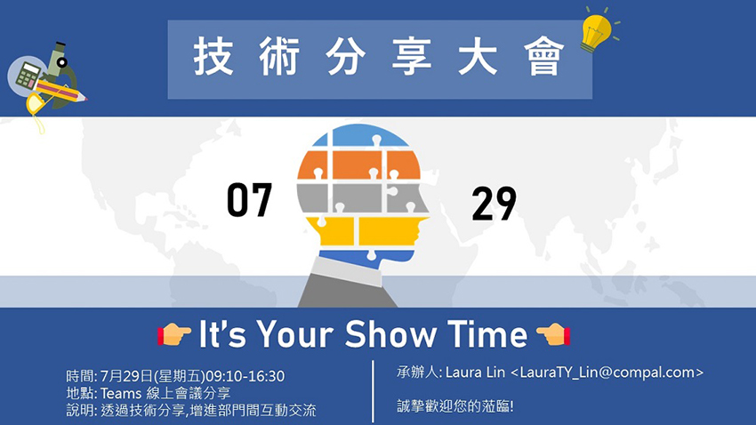
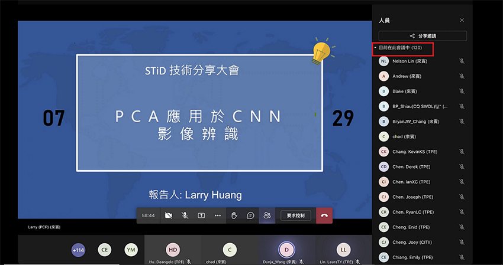
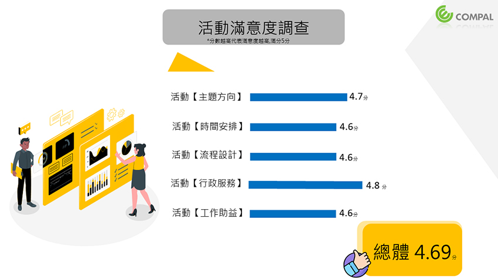
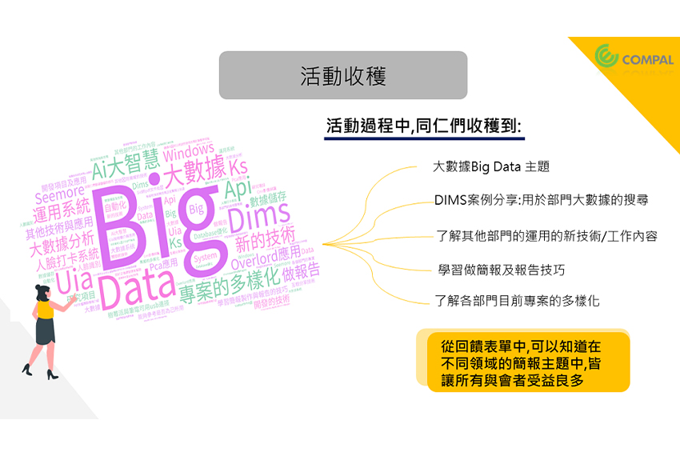
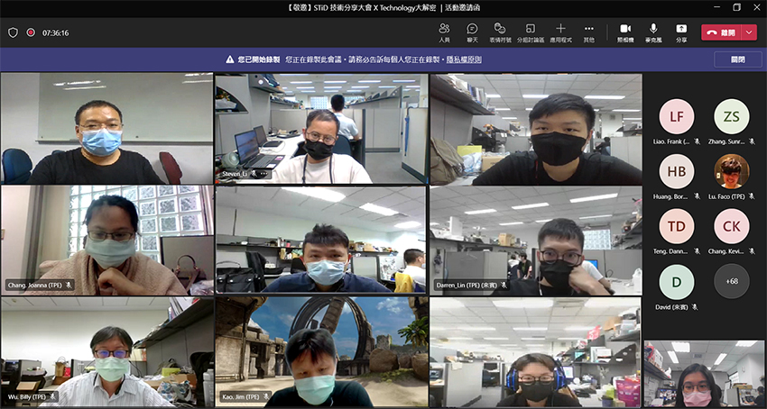

CSW STiD 技術分享大會X Technology大解密
|  |
科技，是運用知識、工具和技術以解決實際的問題。技術，是驅動改變的自發性動力。在不同的領域需有不同的專業技術，相似卻存在著差異。而在自己擁有的技術本身之外，亦是不同的面向，值得細細探究及深耕，並與更多人分享討論，激發出驚豔火花。
共同軟體本部CSW STiD立基於各部門以往豐厚的技術實力，透過彼此的分享互動，在活動過程中觸發更多想法與創意，使自己在如常的工作事項中，開啟工作以外啟發，以及更多運用新技術的可能性，並實現知識分享的願景。也讓自己能與其他部門同事、主管產生連結與共鳴，深度的對話，豐富自身視野與職涯生活。藉由此次跨部門技術交流討論的成果發表會，邀請大家一起腦力激盪，除了精進能力之外，也希冀在彼此的交流學習下，一同推展共同軟體本部CSW STiD在不同技術層面的發展。
本活動於7/29日舉辦，並在防疫的概念下，透過Teams線上會議分享，不僅不受疫情限縮，也不受空間上限制，使得CN同仁皆能參與整場活動。活動開場由共同軟體本部主管 陳益昌資深處長致詞揭開序幕，且有五個場次：AI大智慧、創新實驗室、網路相關、大數據Big Data以及自動化依序登場，以此豐富整場活動視野，參與人數更高達120人。
|  |
在活動謝幕後，透過問卷調查了解同仁們對於活動的滿意度以及活動的收穫，以使活動更臻完美。從滿意度觀之，能知道【主題方向】、【時間安排】、【流程設計】、【行政服務】、【工作助益】平均皆在4.6分以上，總體也有4.69分，接近於5分滿分。另從收穫面可知，不管是技術的大數據分享以及案例分析，或是簡報技巧都是讓同仁收穫滿滿。
|  |
|  |
最後，在活動尾聲時，也不忘留下同仁美麗身影，共同保存難忘回憶。藉由活動學習額外知識，受益匪淺！
|  |